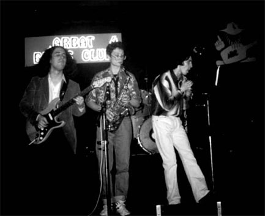

Не очень удачная фотография выступлени группы в Арбат Блюз Клубе. Февраль 1997 года.
Группа King Biscuit, один из лучших коллективов на московской блюзовой сцене, была образована осенью 1995г. по инициативе Романа Гегарта. Можно сказать, что новый коллектив стал логическим продолжением двух известных блюзовых составов: "Cry Baby" и "Dans Ramblers", так как объединил фронтменов из этих групп.
В феврале 1996г. в Arbat Blues Club состоялось первое выступление King Biscuit, после которого специалистами и просто любителями блюза были отмечены: необычное звучание коллектива (в основном из-за нестандартной духовой секции- сочетания альт-саксофона и губной гармоники), а также сценичность и оригинальность в подборе репертуара. В музыке "Бисквитов" того периода, имеющей блюзовую основу с вкраплениями фанка и рок-н-ролла, угадывались также соул интонации. После небольших изменений (группу покинул второй гитарист - "ex-денсремблеровец" Андрей Тульнов), состав стабилизировался и выглядел следующим образом: Роман Гегарт (ex-"Cry Baby", состав Ларисы Григорьевой , "Dans Ramblers")- вокал, губная гармоника, Кирилл Гуцков (ex-"Dans Ramblers") - вокал, бас-гитара, Дмитрий "Груша" Красивов - гитара, Михаил Ребров (различные джазовые коллективы в Финляндии и Бельгии) - альт-саксофон, Андрей Филипов (ex-"Julia & friends")- ударные.
В июне этого же года King Biscuit приняли участие в московском туре европейского фестивал посвященного 100-летию губной гармоники "Marine Band" фирмы Hohner, собравшему более двадцати групп (от джаза до хард-рока) с губными гармонистами в составах, а так же отдельных исполнителей на этом инструменте. На открытии фестиваля Роману Гегарту была оказана высокая честь презентовать в Москве юбилейный (золотой) инструмент, изготовленный фирмой к 100-летию выпуска этой модели гармоники. По результатам фестиваля Роман Гегарт вместе с Михаилом Соколовым и Александром Братецким как лучшие московские гармонисты были делегированы в город Троссинген (Германия) защищать цвета России в финале европейского фестиваля "100-лет гармонике "Marine Band".
Конец 1996 и всю первую половину 1997 года группа активно выступает в московских клубах, принимает участие в различных акциях и фестивалях, среди которых : концерт в качестве гостей на двухлетнем юбилее группы Stainless Blues Band в клубе "Пилот", участие в фестивале по случаю трехлетия передачи "Доктор Блюз" ("Открытое Радио 2х2") Алексея Калачева, фестиваль в American Bar & Grill (На Таганке) по случаю 4-го июля - Дн Независимости Америки и др.
С октября 1996 года организацией концертной деятельности группы занимается московска компания Sky Line promotions & studio.
В мае 1997 года King Biscuit становится секстетом - в группе появляется клавишник Алексей Сысоев, выступавший до этого с Тимом Стронгом и в различных джазовых составах. В июне группу покидает Кирилл Гуцков, вынашива планы создать собственный музыкальный проект. Продолжая экспериментировать со звуком, Роман Гегарт приглашает на его место контрабасиста Михаила Маца.
В августе группа уже в обновленном составе принимает участие в праздновании 80-летия Джона Ли Хукера в клубе "Форте". Новые художественные задачи стоящие перед группой обуславливают следующую замену ритм-секции. С конца 1997 года на бас-гитаре в группе играет Евгений Онищенко, а место за барабанами занял Вартан Бабаян.
Вследствие ряда изменений в составе, трансформировался и стиль группы. В настоящее время это сочетание мощного boogie, джаза, чикагского блюза, музыки соул и рок-н-ролла. Оригинальность звучания группы усиливает часто играющий с King Biscuit баритон-саксофонист Леонид Дармостук из оркестра "Фонограф" Серге Жилина. Не забывает группу и Кирилл Гуцков. Практически на каждом концерте своих бывших коллег он выходит на сцену и исполняет вместе с ними несколько известных блюзовых стандартов. В этот момент группа выглядит уже как небольшой оркестр солистов из восьми человек, импровизирующий в свое удовольствие.
Способность к трансформации состава при сохранении оригинальности звучания, позволяет коллективу выступает как в камерных клубах, так и на больших площадках. Музыкантов King Biscuit также можно услышать на записях и концертах известных исполнителей блюза, джаза и поп-музыки. Лидер "Бисквитов" Роман Гегарт активно занимается преподаванием игры на губной гармонике. Написанная им школа игры на этом инструменте станет первым изданием подобного рода в России.
В настоящее время в группе играют:
Роман Гегарт - вокал, губная гармоника,
Дмитрий "Груша" Красивов - гитара,
Михаил Ребров - альт-саксофон,
Алексей Сысоев - фортепиано, клавишные
инструменты,
Евгений Онищенко - бас-гитара,
Вартан Бабаян - барабаны,
Леонид Дармостук - баритон-саксофон.
Greasy Gravy (2 606k) (by William Clarke) (MP3)
Baby, What You Want Me To Do? (374k)
I Can't Stop Lovin' (493k)
I Wish You Would (563k)